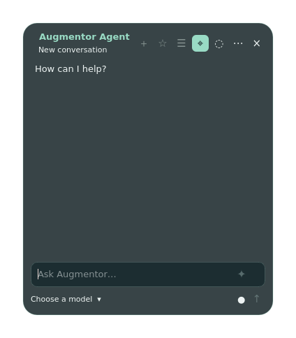

NATIVE APP · LINUX PREVIEW
Augmentor Agent Desktop.
Your DeepSeek Harness workspace, in a native desktop app. The app displays the name Augmentor Agent; Desktop identifies this edition of the product.
Linux comes first
Version 0.2.9 is prepared as a preview for Debian 13 on 64-bit Intel/AMD computers (amd64), using DeepSeek Harness 0.1.5-rc.1. Other Linux distributions are not yet verified.
Your DSH workflow
Work with conversations, model selection and DSH plugin capabilities from the desktop. Available features depend on your installed plugins, configuration and external services.
Download status
The Linux preview package is prepared, but a public download is not available yet. Installation instructions and verified download links will be added here when it is published.
The existing Browser 0.1.32 download is a separate release. It is not the Desktop installer.
Get the public Browser release
Next: macOS, then Windows
Both are planned and are not supported by this Linux preview. Pi backend support is deferred. Pi extensions will follow later, so initial Pi support will have fewer capabilities than DSH. No release dates are announced.
Compare all platform support